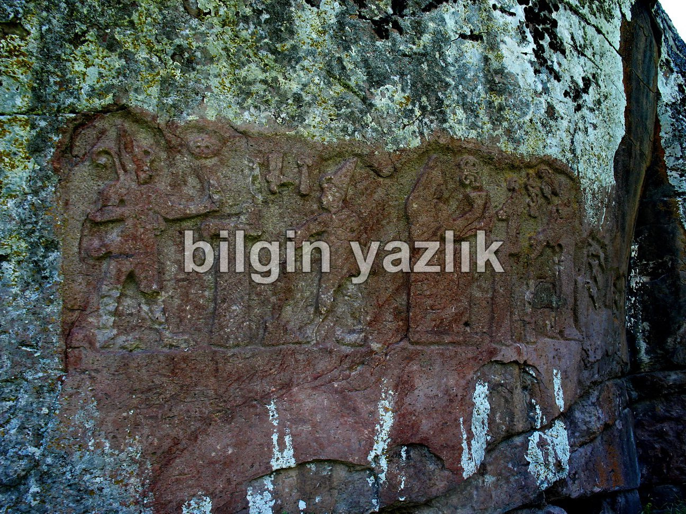
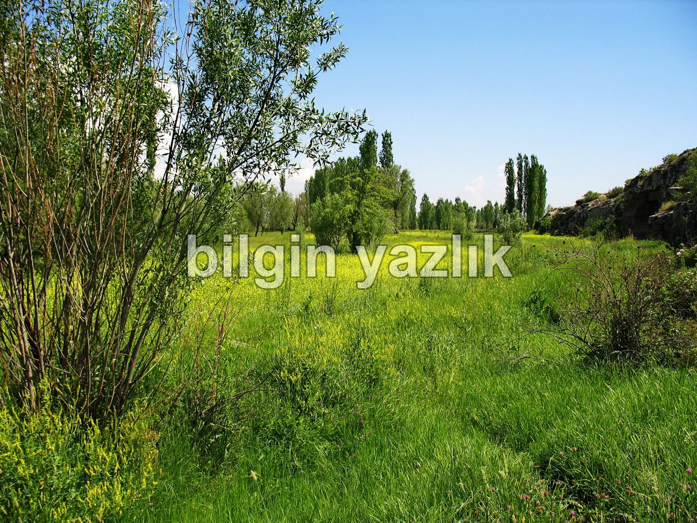

Fraktin
Develi – Bakırdağı karayolundan aşağıda detaylı olarak yer alan haritada göründüğü üzere ara yola sapıyoruz. Bu yol bizi Fraktin bölgesine (günümüz adı ile Gümüşören köyü, eski adı ile Fraktin köyü) götürüyor, fakat yolun tamamı asfalt değil, son 1-2 km’lik yolu toprak yoldan gidiyorsunuz. Bölgenin önemi ve adı burada bulunan büyük kaya resimlerinden gelmektedir. Kayalarda Hitit dönemine ait resimler yer almaktadır. Bu resimleri aşağıdaki fotoğraflar arasında görebilirsiniz. Kaya resimlerine yukarıdan inen bir demir merdivenle iniyorsunuz. Kayanın yakınından küçük bir su akıyor ve suda balık yaşıyor. Demek istediğim, balık tutmak, tarihi kayaları incelemek ve güzel bir piknik yapmak için güzel bir mekan burası.
WOWTurkey.com internet sitesinde bu kayalar şöyle anlatılmaktadır:
“Kayseri Develi ilçesinin güneydoğusunda, Gümüşören Köyü (Eski adı ile Fraktin köyü) sınırları içinde su kenarında kaya üzerine kabartma olarak işlenmiş bir Hitit eseridir. Bu kabartma MÖ XIV. yüzyıla tarihlendirilmektedir. Bu kabartmada bir sunağın iki tarafında karşılıklı iki figür ayakta durmaktadır. Bu figürler Hitit giysileri içerisinde olup, üzerlerinde kısa bir etek, sivri uçlu yüksek bir şapka giymişlerdir. Figürlerden sağdaki sol omzuna bir yay, beline de bir kılıç takmıştır. Sağ eliyle önündeki sunağa bir sıvı dökmektedir. Sol taraftaki figürün Hitit tanrılarından birisi olduğu sanılmaktadır. İleriye doğru uzattığı sol eliyle ne olduğu anlaşılamayan bir nesne tutmaktadır. Figürlerin üzerinde Hitit çivi yazısı ile isimleri yazılıdır. Bunlardan sağdakinin Hitit Kralı III. Hattuşiliş, soldakinin de Hitit Fırtına Tanrısı Teşup olduğu anlaşılmaktadır. Ayrıca bu kabartmanın sağ tarafında ayaklarına kadar inen uzun örtüsü ile bir tanrıça işlenmiştir. Sol tarafta ise taht üzerinde oturan tanrıça sol elinde bir kadeh tutmakta, onun sağındaki kadın ise ayakta ve tanrıçaya içki sunmaktadır. Bunların üstündeki yazılardan bu kadının III. Hattuşilişin eşi Kraliçe Pudu-Hepa olduğu yazılıdır.
Ayrıca Nezih Ötegen beyden aldığımız bilgiye göre Padu-Hepa’nın işaretini taşıyan tek kabartmadır.Padu-Hepa’nın da feminizmin ilk örneklerini verdiğini ve ülkeyi yönetme karşılığında kralla evlendiği de unutulmamalıdır.. ”


Bu yazı taliyol arşivinden taşınmıştır. · özgün kayıt